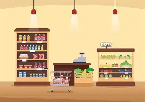

Adventure Works a global manufactirung company specializing in cycling data visibility. The management team required a robust and critical solution tp effectively track kep operational KPI's, meticulously compare regional sales performance, analyze intircate product-level trends and precisely identify high-value customers. Objective is to transform raw transactional data into a interactive & insightful dashboard, empowering stakeholders with clear, data-driven prespectives to opitimise business

Enabling HR and Management to make decisions to reduce attrition, improve employee retention and optimise workforce planning.

Providing comprehensive overview of the stores sales performance throughout the year 2022.

This project is up to track sales performance, analyze product-specific trends (coffee types), identify top markets & understand the customers behaviour.